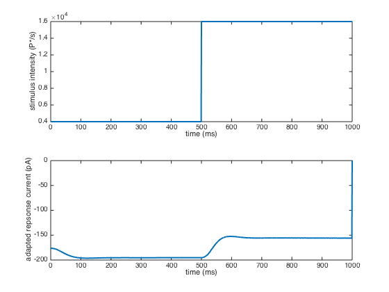

t_coneAdapt
Demonstrate the physiological differential equations based cone adaptation model.
NOTES: 1) It takes a very long time to compute the stimulus, at least on some machines. 2) Might be worth a comment on the source of the edge effects in the output plots. I think they are artifacts due to the truncation of the stimulus on each end. 3) Minor glitch in how the % completionprints out at the end of the stimulus generation loop.
(HJ) ISETBIO TEAM, 2014
Contents
Init
ieInit;
ieSessionSet('gpu', 0);
Compute cone isomerizations
The stimulus used here is a step Gabor patch, at 1~500 ms, the stimulus is of mean luminance 50 and at 501~1000 ms, the stimulus is of mean luminance 200
% Eet up parameters for Gabor patch % There is no temporal drifting now. But we could have that by changing % phase with time fov = 2; params.freq = 6; params.contrast = 1; params.ph = 0; params.ang = 0; params.row = 256; params.col = 256; params.GaborFlag = 0.2; % standard deviation of the Gaussian window % Set up scene, oi and sensor scene = sceneCreate('harmonic', params); scene = sceneSet(scene, 'h fov', fov); oi = oiCreate('wvf human'); sensor = sensorCreate('human'); sensor = sensorSetSizeToFOV(sensor, fov, scene, oi); sensor = sensorSet(sensor, 'exp time', 0.001); % 1 ms sensor = sensorSet(sensor, 'time interval', 0.001); % 1 ms % Compute cone absorptions for each ms, for a second. % This is very slow. nSteps = 1000; volts = zeros([sensorGet(sensor, 'size') nSteps]); stimulus = zeros(1, nSteps); fprintf('The computation of the stimulus is very slow.\n'); fprintf('Go get a cup of coffee while this runs.\n'); fprintf('Computing cone isomerization: '); for t = 1 : nSteps fprintf('\b\b\b%02d%%', round(100*t/nSteps)); % Low luminance for first 500 msec and the step up. if t < nSteps / 2 scene = sceneAdjustLuminance(scene, 50); else scene = sceneAdjustLuminance(scene, 200); end % Compute optical image oi = oiCompute(scene, oi); % Compute absorptions sensor = sensorCompute(sensor, oi); volts(:,:,t) = sensorGet(sensor, 'volts'); stimulus(t) = median(median(volts(:,:,t))); end fprintf('\n'); % Set the stimuls into the sensor object sensor = sensorSet(sensor, 'volts', volts); stimulus = stimulus / sensorGet(sensor, 'conversion gain') /... sensorGet(sensor, 'exp time');
The computation of the stimulus is very slow. Go get a cup of coffee while this runs. Computing cone isomerization: 11111100%
Compute adapated current
[~, cur] = coneAdapt(sensor, 4);
Plot
figure; grid on; t = 1 : nSteps; % Plot mean input stimulus subplot(2, 1, 1); plot(t, stimulus, 'lineWidth', 2); xlabel('time (ms)'); ylabel('stimulus intensity (P*/s)'); % Plot mean cone current subplot(2, 1, 2); meanCur = median(median(cur)); plot(t, meanCur(:), 'lineWidth', 2); xlabel('time (ms)'), ylabel('adapted repsonse current (pA)');